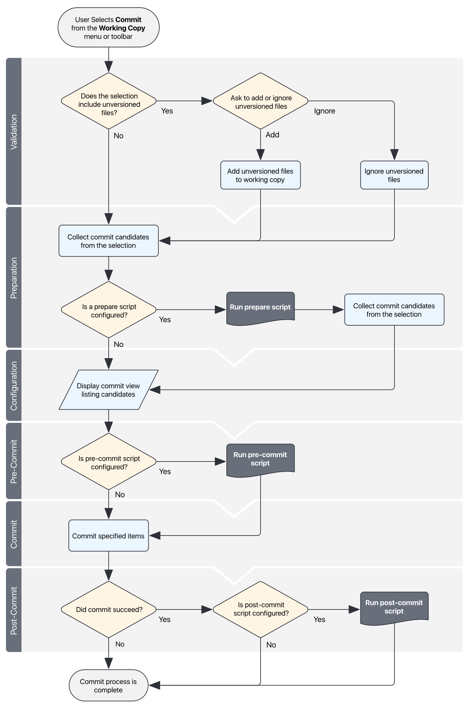

You can extend the commit process with your own actions that are implemented through scripts. Cornerstone allows you to run scripts at three points during the commit process:
During commit preparation
Scripts run during commit preparation are termed Prepare Scripts.
Before committing to the repository
Scripts run when the user presses Commit Changes in the commit view (but before the commit is started) are termed Pre-Commit Scripts.
After the commit completes
Scripts run after successful completion of the commit are termed Post-Commit Scripts.
Cornerstone can run actions implemented as AppleScript, Automator actions, Perl scripts, Python scripts and Unix shell scripts.
The commit process is divided into several distinct phases that are described in the following flow diagram. The relevant phases for commit actions are the Preparation Phase, Pre-Commit Phase and Post-Commit Phase.

For more information see: